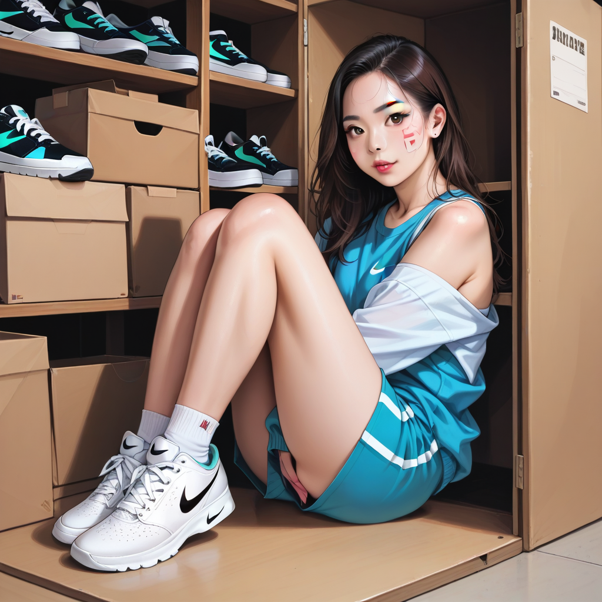

스니커즈 커스텀 작가로서 본다면, 신발이 파손됐든 박스가 찢어졌든 가격에 직결되는 건 같은 원리다. 특히 나이키 SB Dunk Low 파리 2003 년판과 2021 년 레트로판을 비교할 때 오리지널 박스는 단순한 포장재가 아니라 자산 가치를 담는 그릇이다.
2003 년판은 당시의 제조 공정이 남아있어 스치 밀도가 훨씬 높고, 박스 내부 종이도 두껍다. 반면 2021 년 재발행 버전은 재질 경량화 과정에서 박스 판이 얇아져서 손에 잡히는 질감 차이가 명확하다. 이게 뭔 말인지는 알겠지? 박스가 찢어지면 리셀 시장에서 즉시 40% 가량 가치가 뚝 떨어진다.

셔츠룸에서 셔츠를 접듯이 박스를 보관하는 게 핵심이다. 서울 마포나 합정 근처의 1 티어 샵들은 보통 상자에 스티커나 로고를 붙이지 않고 깔끔하게 정리한다. 그 이유는 바로 '오리지널리티' 때문이다. 박스에 적힌 일련번호나 로트 넘버까지 손상되면 그 시대의 증거가 소멸하는 셈이다.
실행 단계로 말해, 박스를 다룰 때는 손으로 직접 잡기보다 상자 안쪽을 보호하는 삽이나 천을 쓰는 게 좋다. 특히 2003 년판처럼 박스 내부에 스티치가 밀집된 모델은 충격 흡수력이 약하기 때문에 떨어뜨리는 순간 미세한 틈새가 생길 수 있다.
실패 방지 측면에서는 습기 관리가 필수다. 서울의 고습도 환경에서 종이 박스는 쉽게 변색되거나 뭉개진다. 셔츠를 옷장에 넣듯이, 밀폐 용기에 박스를 담고 건조제를 함께 넣는 습관이 중요하다. 돈은 벌어야 하지만, 그걸 지키는 방법은 훨씬 간단하다.
마지막으로, 박스 상태를 유지하는 건 신발만큼이나 중요하지만 덜 알려진 사실이다. 셔츠룸 예약을 고려할 때 옷장 정리와 함께 박스 보관 공간을 확보하는 것도 스마트한 전략이다. 돈은 번다. 하지만 그걸 지키는 방법은 훨씬 간단하고 직설적이다.